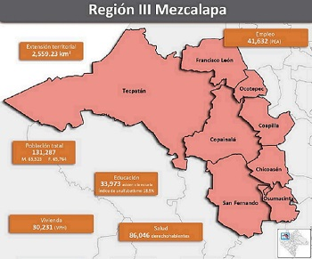
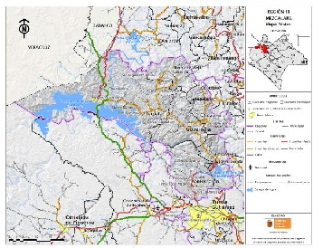

La Región III Mezcalapa está conformada por ocho municipios: Chicoasén, Coapilla, Copainalá, Francisco León, Ocotepec, Osumacinta, San Fernando y Tecpatán; pero a la cual agregamos aexte proyecto el nuevo municipio de Mezcalapa antes comunidad de Tecpatan y al municipio de Ocozocoautla. Colinda al norte con el estado de Tabasco y con la Región VIII Norte, al este con la Región VII De los bosques, al sur con la Región II Valles Zoque y al oeste con el estado de Oaxaca.

La region de Mezcalapa constituyen el 13.49% de su superficie, que a su vez representan el 12.96% del total de la superficie protegida en la región. Destaca la Zona Protectora Forestal Vedada Villa Allende, que presenta un alto grado de alteración, ya que solo en las cotas altitudinales más altas se encuentran las especies que originalmente lo poblaban; El Parque Nacional Cañón del Sumidero, está constituido principalmente por vegetación secundaria (selva baja caducifolia y subcaducifolia con vegetación secundaria arbustiva y herbácea), selvas secas (selva baja caducifolia y subcaducifolia), bosque de coníferas (bosque de pino-encino), selvas húmedas y subhúmedas (selva alta y mediana subperennifolia) y pastizales y herbazales (pastizal 16 inducido). El parque es recorrido por el Río Grijalva que en su parte más alta mide poco más de 1,000 m; y el Corredores biológico Chimalapa - Uxpanapa-El Ocote, está constituida principalmente de vegetación secundaria (selva alta y mediana perennifolia con vegetación secundaria arbustiva y herbácea).
La Región III Mezcalapa presenta un clima del grupo de los cálidos. Predomina el cálido húmedo con lluvias todo el año, seguido por el clima cálido subhúmedo con lluvias abundantes de verano y el cálido subhúmedo con lluvias de verano, en la parte sur de la región. Durante los meses de mayo a octubre, la temperatura mínima promedio va desde los 12°C y hasta los 22.5°C, predomina de 18°C a 21°C con el 44.46% de la región y de 21°C a 22.5°C con el 37.82% de la región. En este mismo periodo, la temperatura máxima promedio oscila de los 24°C y hasta los 34.5°C, predominando los 33°C a 34.5°C en el 48.71% de la región y de 30°C a 33°C con el 25.22% de la región. La precipitación pluvial en estos meses oscila de los 800 mm a 3,000 mm.
La Región III Mezcalapa presenta una cobertura vegetal compuesta principalmente por vegetación secundaria, es decir, selva perennifolia-caducifolia, bosque de encino, bosque mesófilo de montaña y vegetación inducida; debido al crecimiento demográfico del último cuarto del siglo XX han desaparecido muchas especies nativas y otras ya son escasas. La gradual expansión de las ciudades ha arrebatado muchos terrenos a las áreas verdes. Sin embargo, predominantemente es la vegetación secundaria el cual tiene la más alta distribución porcentual regional. Se encuentran maderas preciosas entre ellos: caoba, cedro, pino, fresno, palo de rosa, chicozapote, aguacatillo, humo prieto, pajarito, guachipilín, limoncillo, otate, palo amarillo, roble, amate, ceiba, guarumbo, hule, clavo, jimba, taray. La Región Mezcalapa cuenta con una gran variedad de especies entre las que destacan las siguientes: mico de noche, tigrillo, conejo, víbora de cascabel, nauyaca, boa, corales, iguana de ribera, tortuga plana, culebra ocotera, gavilán golondrino, ardilla voladora, jabalí, venado, tejón, iguana de ribera, tortuga cocodrilo, zopilote rey, armadillo y mapache. En los reptiles destacan el turipache, cuija, agujilla, mazacuata, iguana de roca, lagartija metálica, culebra ranera, bejuquilla panda, nauyaca de río y voladora, sin olvidar el lagarto de rio y cocodrilo. Y en las aves el pajuil, chachalaca, colibrí, carpintero, zanate, quetzal, zopilote, gavilancillo, codorniz, golondrina, paloma morada, tortolita, cotorra, tapacaminos, tecolotito, pico de hacha, pico real y la tiríscula. La vegetación predominante de esta Región es de selva alta perennifolia, mediana subperennifolia, selva baja caducifolia; también cuenta con bosque de encino-pino. Por tanto sostiene una gran biodiversidad con más de 331 especies de plantas y 252 especies de animales. De todas éstas, más de 50 especies se encuentran en alguna categoría de riesgo según la Norma Oficial Mexicana NOM-059-ECOL-2001 y por instancias internacionales como la Unión Internacional para la conservación de la Naturaleza (UICN) y el Convenio Internacional para el Tráfico de Especies de Flora y Fauna Amenazadas (CITES).